DEPORTE ARGENTINO
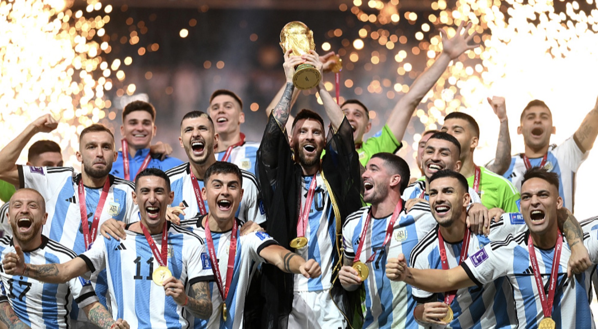
N°10 QATAR 2022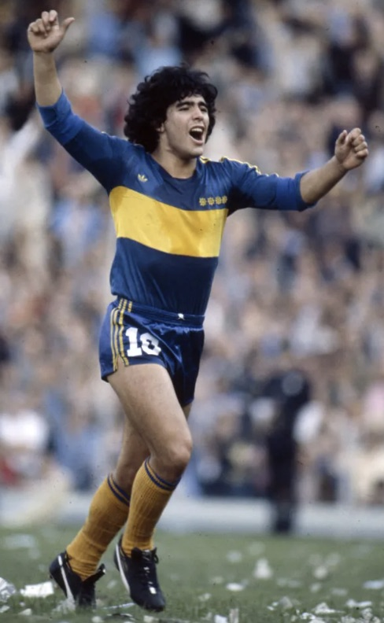
1981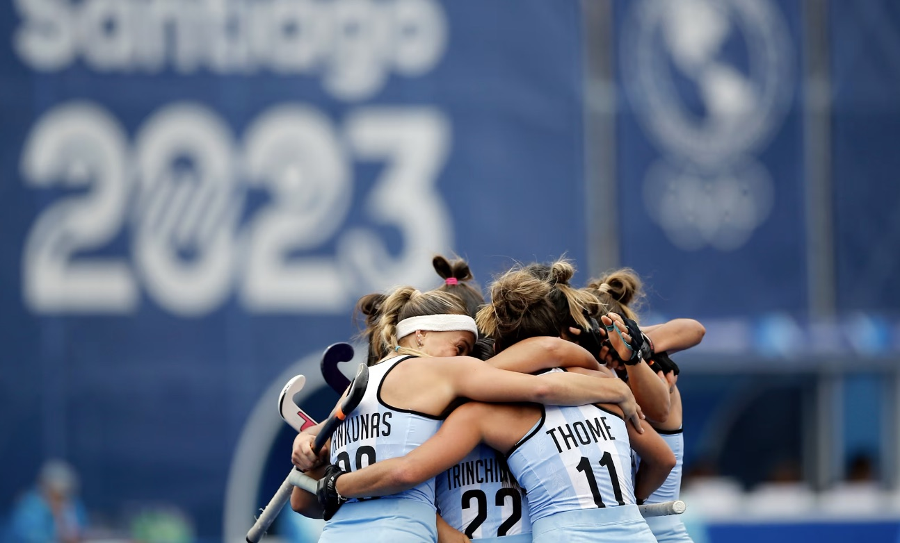
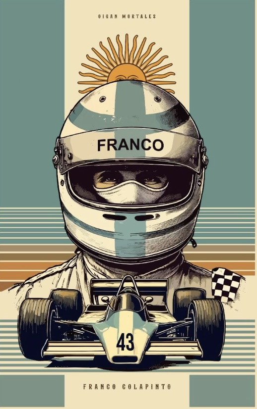
La economía argentina lleva años marcada por inflación alta y devaluaciones constantes, un contexto que en teoría debería limitar la inversión en desarrollo deportivo. Sin embargo, el país lidera un mercado global de talento, lo que sugiere que el capital disponible no es la variable determinante.
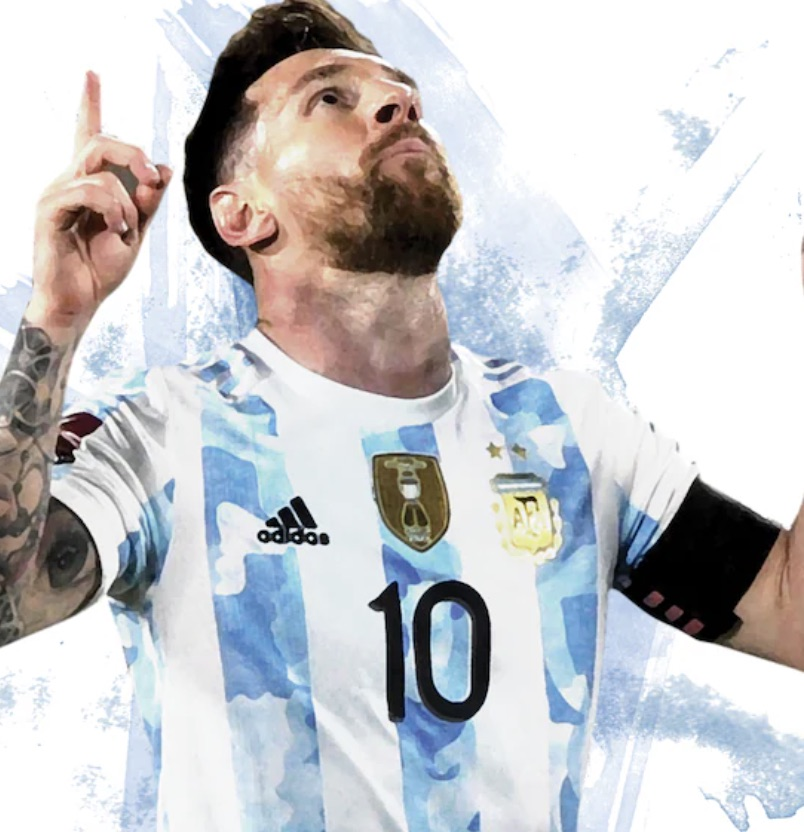
Nº 07 EXPORTACIÓNSi el dinero fuera la explicación, el éxito debería concentrarse solo en el fútbol, el deporte más rentable del país. Pero el mismo nivel competitivo aparece en disciplinas donde la mayoría de los atletas no vive de forma profesional.
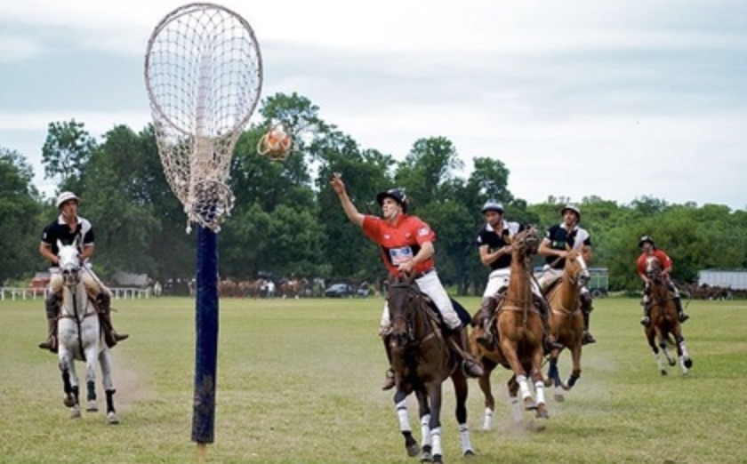
POLO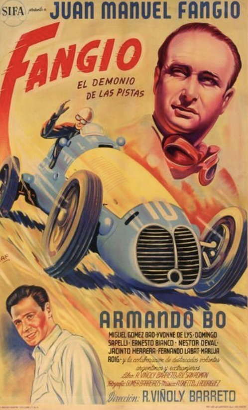
Nº 5FANGIO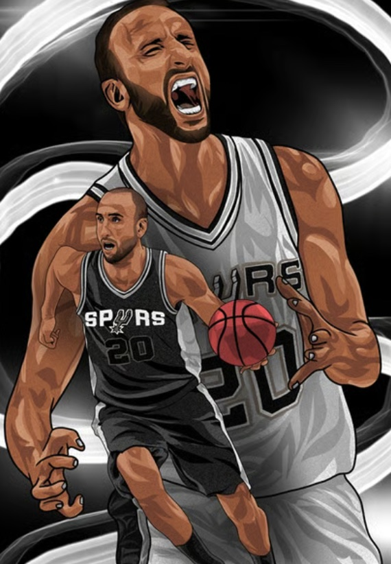
Nº 20BÁSQUET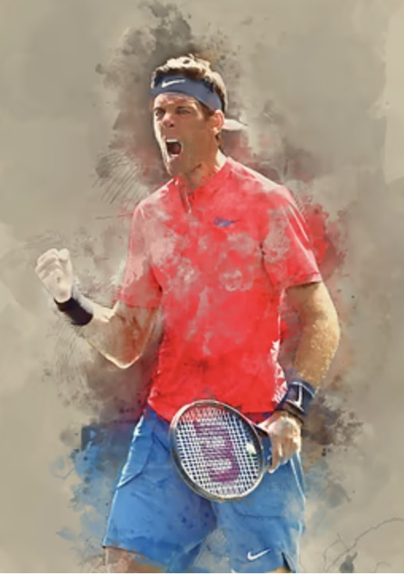
TENISDetrás de cada resultado hay la misma estructura repetida en todo el país. Con miles de clubes funcionando como asociaciones civiles y respaldados por ley, esta institución es la base común de todo el sistema deportivo argentino.
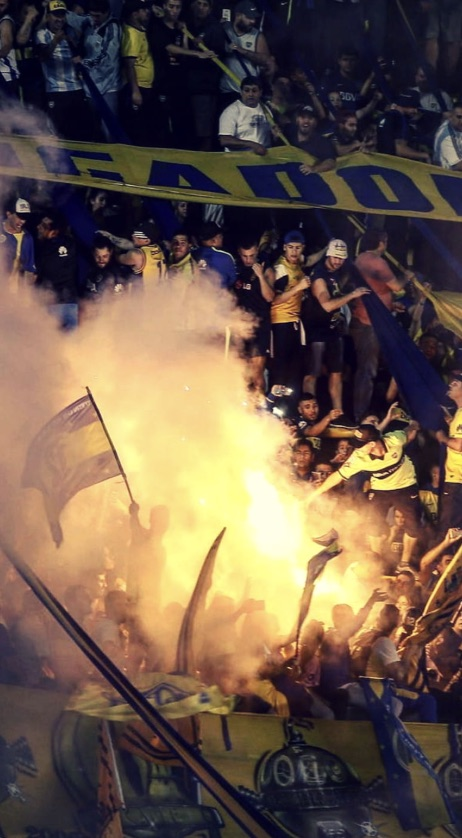
LA HINCHADA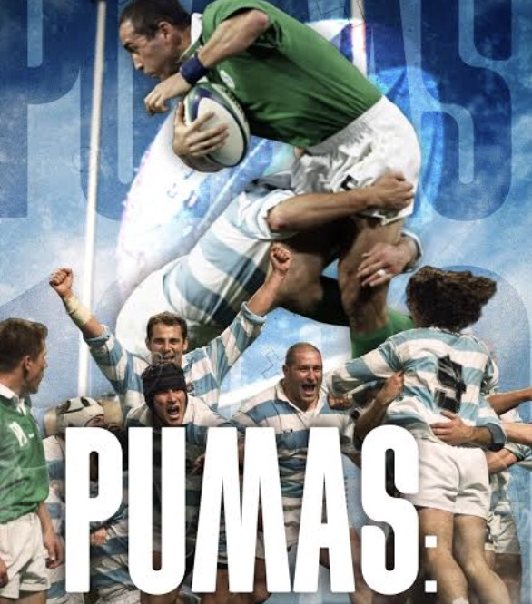
LOS PUMAS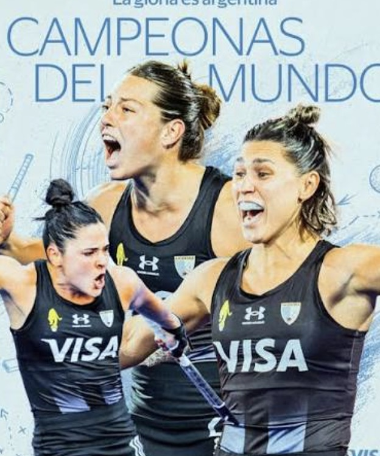
CAMPEONASLa forma en que se organiza la propiedad también marca una diferencia frente a otros modelos deportivos del mundo, y explica por qué la lógica del club se sostiene incluso sin grandes flujos de capital.
Socios eligen presidente y directiva por voto
Directivos trabajan ad honorem, sin sueldo
Clubes operados como negocios privados
Regla 50+1: control mixto socios/inversionistas
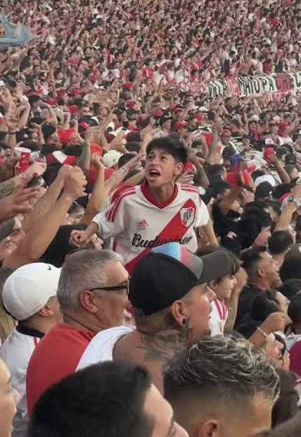
Esta estructura de propiedad colectiva tiene una consecuencia directa en cómo la gente se relaciona con su club: no es una decisión de consumo, es una pertenencia que se sostiene incluso sin resultados.
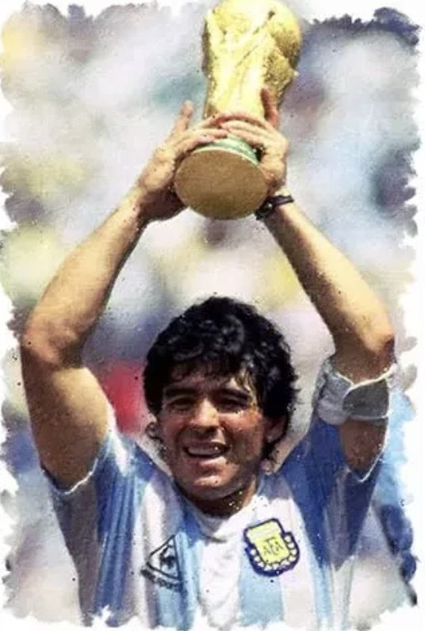
LEYENDAAl conectar los puntos anteriores, el patrón se vuelve claro: la variable constante en todos los casos es la misma institución, no el capital disponible.
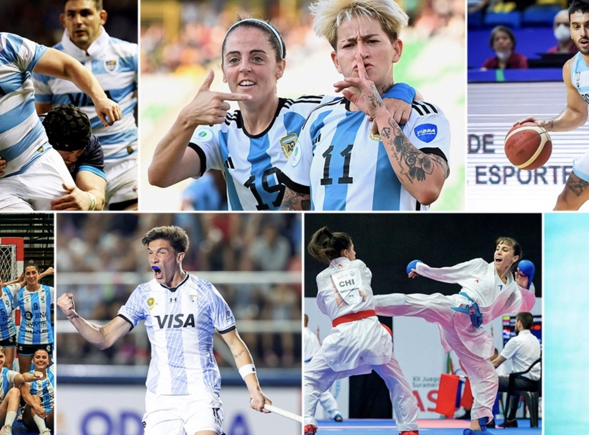
MUCHOS DEPORTES, UN CLUB"Un niño entra al club por amistad, no por ambición profesional. Años después puede representar al país, y eventualmente regresar como socio o entrenador."
El caso argentino invita a preguntarse si existe un equivalente en otros países, una institución que forme identidad y comunidad antes que cualquier incentivo económico.